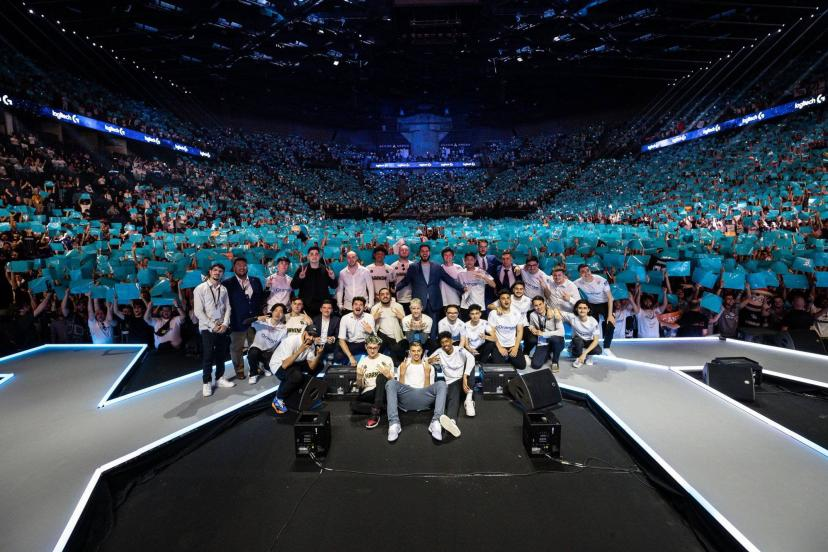

Le KClub est un club de supporters de la Karmine Corp, une organisation française d'e-sport.
Créé par les fans pour les fans, le KClub vise à rassembler et fédérer la communauté autour de la Karmine Corp.
Ce club permet aux supporters de s'engager activement, de participer à des événements exclusifs, de bénéficier de contenus et d'avantages spécifiques, tout en cultivant un sentiment d'appartenance et de soutien à l'équipe.
La Karmine Corp, notamment connue pour ses succès en League of Legends, a ainsi renforcé son lien avec ses supporters grâce au KClub.
Pourquoi nous rejoindre ?
Les événements KCX organisés par la Karmine Corp sont véritablement uniques en leur genre. L'ambiance qui règne lors de ces rassemblements est tout simplement exceptionnelle, marquée par une ferveur et une énergie incomparables.
Voir plus
Les fans de la Karmine Corp se rassemblent par milliers, créant une atmosphère électrique et festive qui transcende les limites habituelles des événements e-sport.
Chaque détail est soigneusement pensé pour offrir une expérience inoubliable. Des animations spectaculaires, des shows de haute qualité et une organisation impeccable font des KCX des moments inégalés dans le monde de l'e-sport. Aucun autre club n'arrive à orchestrer des événements d'une telle envergure et avec une telle maîtrise.
Que ce soit par l'engagement des supporters, l'enthousiasme des joueurs ou l'excellence de la production, les KCX se démarquent par leur capacité à fédérer et à enthousiasmer. Les fans repartent toujours avec des souvenirs mémorables et une seule envie : assister au prochain événement pour revivre cette ambiance unique.
En somme, la Karmine Corp ne se contente pas d'organiser des événements, elle crée des expériences qui marquent les esprits et établissent de nouveaux standards dans le domaine. Aucun autre club ne peut prétendre offrir une telle intensité et une telle qualité dans ses rassemblements, faisant des KCX une référence absolue dans l'univers de l'e-sport.

La Karmine Corp, c'est bien plus qu'une simple équipe d'e-sport : c'est une grande famille. Les supporters de la Karmine, unis par une passion commune, forment une communauté soudée et solidaire.
Voir plus
Que ce soit dans la victoire ou dans la défaite, les fans de la Karmine Corp se tiennent toujours ensemble, incarnant des valeurs de fidélité et de soutien mutuel.
L'esprit de famille qui règne au sein de la Karmine Corp se manifeste dans chaque interaction, chaque rassemblement et chaque événement. Les supporters partagent des moments forts, célèbrent ensemble les victoires éclatantes et se réconfortent mutuellement dans les moments de défaite. Cette solidarité inébranlable est la clé de la force et de la résilience de la communauté Karmine.
Les liens entre les membres de cette grande famille se tissent lors des KCX et se renforcent à chaque match et à chaque rencontre. La Karmine Corp a su créer un environnement où chaque supporter se sent chez lui, entouré de personnes qui partagent les mêmes valeurs et la même passion.
Ensemble, les supporters de la Karmine Corp forment un bloc uni, prêt à tout pour soutenir leur équipe. Cette union fait la force de la Karmine, démontrant que, au-delà des résultats sportifs, c'est la camaraderie et la fraternité qui définissent véritablement ce club unique. La Karmine Corp est et restera une grande famille, unie par un amour indéfectible pour le jeu et pour les uns les autres.
La Karmine Corp est devenue une équipe légendaire, célèbre pour ses nombreuses victoires et sa collection de trophées. Depuis sa fondation, elle a progressé, démontrant une maîtrise et une détermination inégalées dans l’e-sport.
Voir plus
Chaque compétition voit la Karmine Corp se distinguer par son jeu exceptionnel, sa stratégie impeccable et son esprit combatif. Les joueurs, véritablement passionnés et talentueux, donnent le meilleur d'eux-mêmes à chaque match, assurant des performances de haut niveau qui mènent l'équipe à la victoire. Cette excellence continue a permis à la Karmine de remporter de nombreux titres prestigieux et de s'inscrire durablement au sommet de l'e-sport.
La vitrine des trophées de la Karmine Corp ne cesse de se remplir, témoignant de l'incroyable parcours de l'équipe. Des championnats nationaux aux compétitions internationales, la Karmine a su s'imposer comme une force incontournable, accumulant les distinctions et consolidant sa réputation d'équipe victorieuse.
Ce succès n'est pas seulement le résultat du talent individuel, mais aussi d'une cohésion d'équipe exemplaire et d'une organisation sans faille. Chaque membre, du joueur au staff, contribue à cette dynamique de victoire, faisant de la Karmine Corp une équipe redoutée et respectée par ses adversaires.
En somme, la Karmine Corp est synonyme de succès et de trophées. Elle continue de faire rêver ses supporters et d'inspirer le respect dans le monde de l'e-sport par ses performances remarquables et son palmarès impressionnant. La Karmine est une équipe qui gagne, et elle ne cesse de le prouver à chaque compétition.